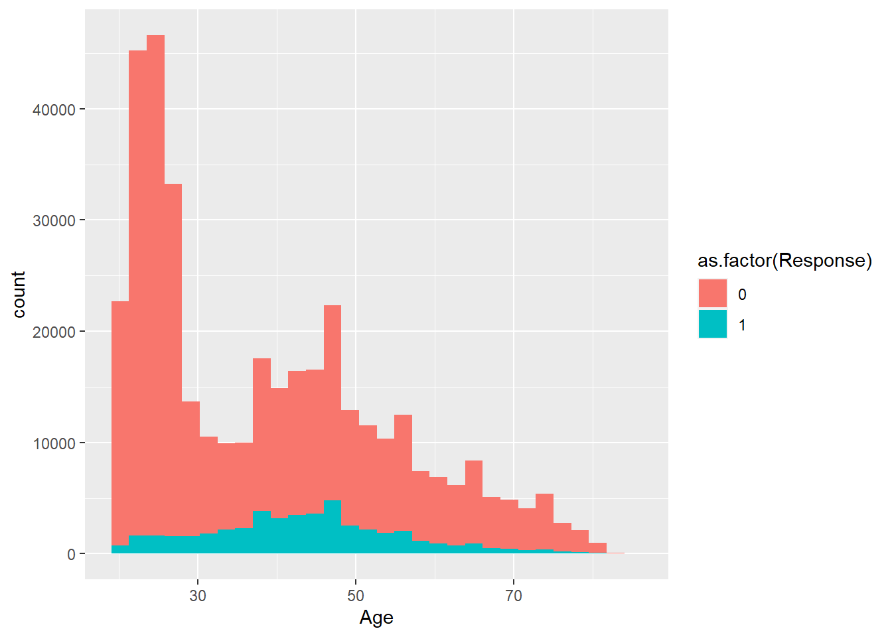
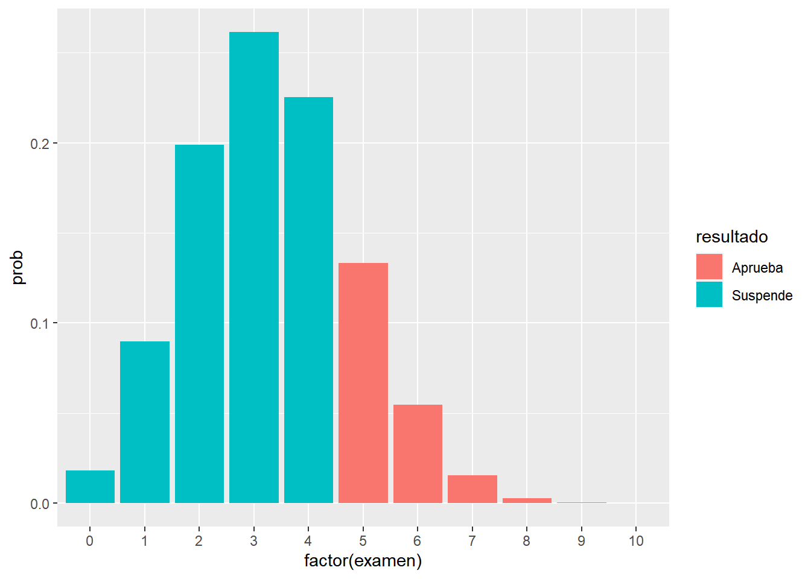
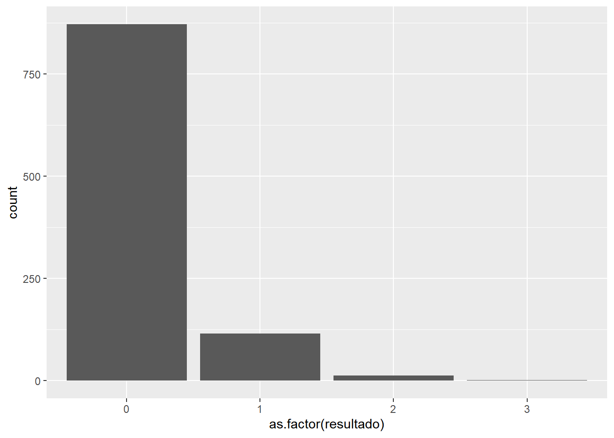
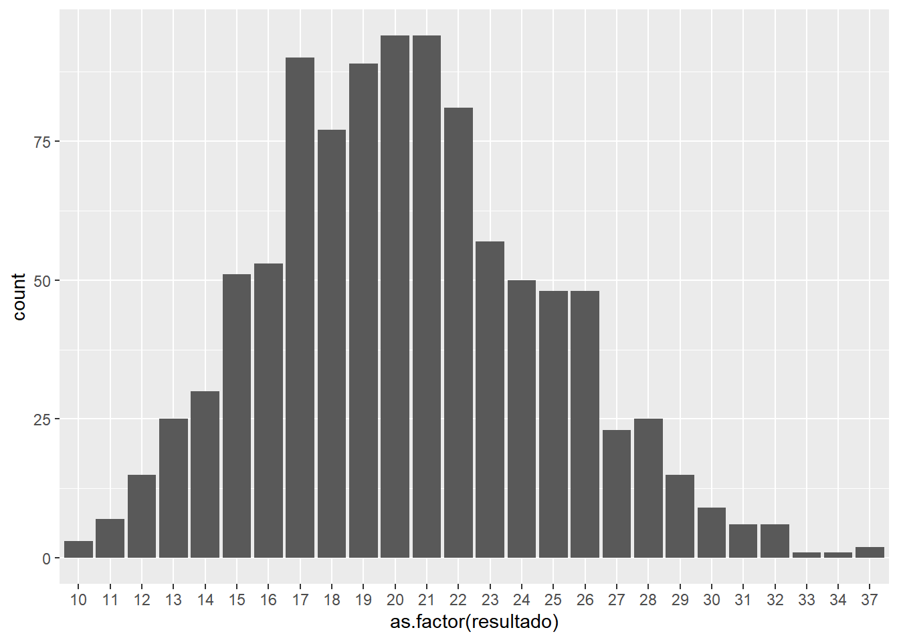
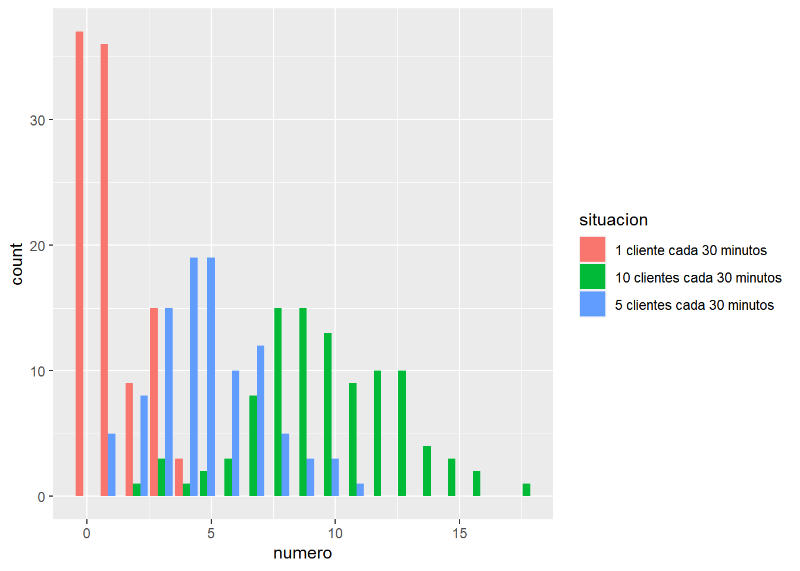
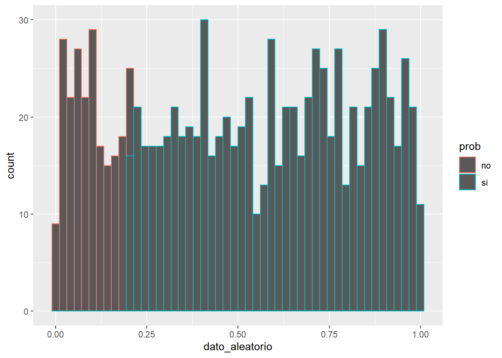
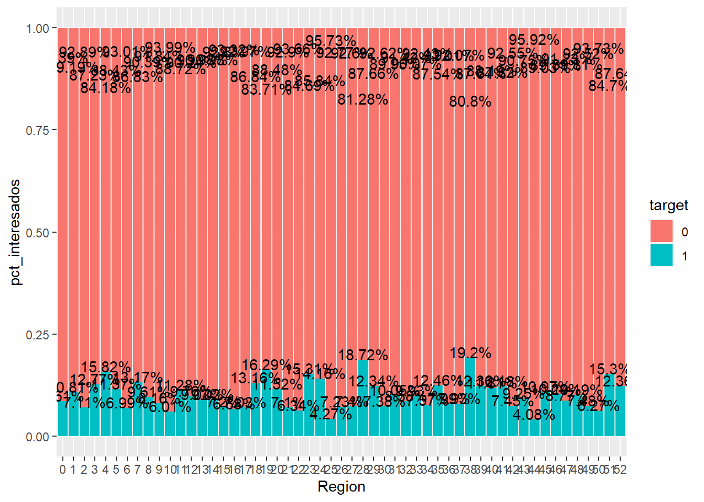
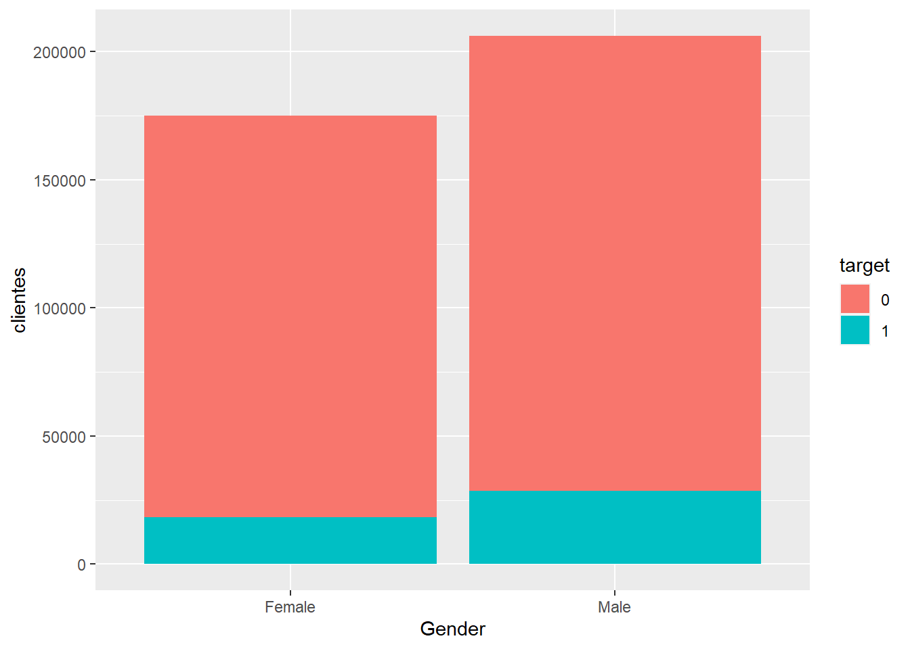

Capítulo 8 Problemas con los datos
Siguiendo con el desarrollo se ha establecido una estructura de datos, fundamentalmente se está trabajando con data frames, que se componen de filas (registros) y columnas (variables). Tanto registros como variables pueden presentar problemas que dificulten la gestión de la información al científico de datos. En este capítulo se van a estudiar los problemas más comunes con los datos y se plantean posibles estrategias para resolver estos problemas. Aunque los datos pueden presentar problemas desde el punto de vista de los registros y desde el punto de vista de las variables en este caso se van a abordar análisis de variables que permitirán identificar tanto variables como registros que distorsionan el análisis. Para encontrar y describir estas situaciones se dispone tanto de análisis numéricos como análisis gráficos sencillos con los que se tomó contacto en los dos capítulos anteriores.
Para ilustrar esta situaciones se continúa con el caso práctico de trabajo visto en el apartado 6.2 de este libro. Como en capítulos anteriores se cargan los datos:
library(tidyverse)
train <- read.csv("./data/train.csv")
head(train,5)## id Gender Age Driving_License Region_Code Previously_Insured Vehicle_Age Vehicle_Damage Annual_Premium
## 1 1 Male 44 1 28 0 > 2 Years Yes 40454
## 2 2 Male 76 1 3 0 1-2 Year No 33536
## 3 3 Male 47 1 28 0 > 2 Years Yes 38294
## 4 4 Male 21 1 11 1 < 1 Year No 28619
## 5 5 Female 29 1 41 1 < 1 Year No 27496
## Policy_Sales_Channel Vintage Response
## 1 26 217 1
## 2 26 183 0
## 3 26 27 1
## 4 152 203 0
## 5 152 39 0A modo de recuerdo, son datos de una compañía de seguros que opera en el ramo de salud y que desea realizar una campaña de venta cruzada para ofrecer seguro de automóviles a sus asegurados de salud. Para ello ha elaborado una encuesta que le permite perfilar que clientes son los más propensos a comprar su producto de automóviles.
8.1 Problemática con factores
8.1.1 Factores con niveles de pocos registros
Cuando se estudian características, cualidades, es posible que una cualidad esté presente en un porcentaje muy alto de observaciones. Cuando un factor presenta un nivel con un gran número de observaciones y el resto de niveles apenas tiene observaciones, ¿tiene sentido conservar ese factor?
En la descripción de los datos se hace mención a esta variable Driving_License. El científico de datos va a emplear la estadística para conocer y depurar la calidad de los datos que maneja, esa estadística le va a permitir transformar esos datos en información pero antes de todo análisis tiene que apelar al sentido común y al conocimiento y la motivación de su trabajo. El problema que se quiere resolver con los datos a nuestra disposición es determinar que clientes del ramo de salud son más propensos a comprar una póliza del ramo de automóviles ¿tiene sentido vender a clientes sin carnet de conducir pólizas de automóviles? ¿Qué nos dice la variable?
resumen <- train %>% group_by(Driving_License=as.factor(Driving_License)) %>%
summarise(porcen_clientes = n()/nrow(train))
ggplot(resumen, aes(x=Driving_License, y=porcen_clientes)) + geom_bar(stat="identity") +
ggtitle("Distribución de variable Driving_License")
La práctica totalidad de los clientes encuestados tiene carnet. Es una variable que no tiene sentido, si se va a ofrecer un seguro de automóviles será necesario que el cliente pueda optar a tener un automóvil. En esta situación se plantea una estrategia muy simple la variable ha de ser eliminada, bien es cierto que se puede plantear la eliminación de aquellos clientes que no tienen carnet, pero son muy pocos. Un análisis descriptivo de lo más sencillo está permitiendo detectar claros problemas de negocio.
Cuando se trabaje con factores es necesario estudiar si hay algún nivel con un porcentaje desmesurado de observaciones, esa desmesura la debe establecer el científico de datos con sus análisis descriptivos, si fuera necesario fijar un umbral, por encima de un 95% de observaciones en un mismo nivel se sugiere trabajar con mayor detenimiento ese factor.
8.1.2 Factores que aparecen como variables numéricas
Se sigue haciendo mención en múltiples ocasiones, el científico de datos debe conocer los datos con los que está trabajando. Habrá situaciones en las que se enfrente a cientos (miles de variables) y tenga que decidir cuales de ellas sirven en su tarea. Esto sucede cuando los tablones de trabajo se almacenan en estructuras como data lakes con un volumen ingente tanto de registros como de variables por eso el científico de datos establece como describir esas variables, si describir una variable numérica o describir un factor. En los datos de trabajo este problema se presenta en la variable Region_code.
summary(train$Region_Code)## Min. 1st Qu. Median Mean 3rd Qu. Max.
## 0.00 15.00 28.00 26.39 35.00 52.00¿Tiene sentido esta sumarización? Evidentemente no, y este es uno de los problemas más comunes que aparece en el trabajo con datos. El formato de las variables no es el adecuado, lo podremos identificar conociendo los datos o bien asignando nombres a las variables que nos permitan “intuir” el tipo, en este caso se emplea el sufijo code que ya nos deja claro que tipo de variable es y como debemos tratarla
resumen <- train %>% group_by(Region_Code=as.factor(Region_Code)) %>% summarise(porcen_clientes = n()/nrow(train)) %>% arrange(desc(porcen_clientes))
head(resumen)## # A tibble: 6 x 2
## Region_Code porcen_clientes
## <fct> <dbl>
## 1 28 0.279
## 2 8 0.0889
## 3 46 0.0518
## 4 41 0.0479
## 5 15 0.0349
## 6 30 0.0320ggplot(resumen, aes(x=Region_Code, y=porcen_clientes)) + geom_bar(stat="identity") +
ggtitle("Distribución de variable Region_Code")
Se ha indicado con anterioridad que son datos de una aseguradora española, si se conoce la distribución geográfica de España esta variable hace referencia a las provincias, donde el 28 es Madrid y el 8 es Barcelona. Es posible que este dato no se conozca, se insiste, es relevante asociar un dato numérico a una codificación, esta variable nunca habría de tratarse como numérica. En el caso que nos ocupa, conocida la estructura administrativa de España, aparece la provincia 0, como tal no es un valor perdido, es un valor desconocido que no ofrece información a la resolución del problema que se está planteando con los datos.
IMPORTANTE: Nunca se deben dar análisis numéricos de factores, no se deben hacer medias de regiones, ni medias de sexo, ni percentiles de códigos. Hay que tener muy claros los datos que participan en los análisis.
8.1.3 Factores con un gran número de niveles
Trabajar con códigos puede plantear un problema con el número de niveles en un factor, en el ejemplo de la variable Region_Code se representa el ranking de porcentaje de encuestas por provincia española:
train %>% group_by(Region_Code=as.factor(Region_Code)) %>%
summarise(porcen_clientes = n()/nrow(train)) %>%
ggplot(aes(x=reorder(Region_Code,porcen_clientes), y=porcen_clientes)) + geom_bar(stat="identity") +
ggtitle("Distribución de variable Region_Code") + coord_flip()
El código empleado en ggplot tiene aspectos interesantes y que permiten crear gráficos descriptivos más completos. Empezando por indicar que no se crea un data frame temporal intermedio, directamente se emplea el pipe (%>%) para realizar la representación gráfica. Por otro lado, se emplea la función reorder(factor, orden) para ordenar el factor en análisis en función de otro campo, en este caso se pretenden ordenar los códigos de provincia en función del porcentaje de observaciones que contiene. Por otro lado, para realizar un ranking se emplea un gráfico de barras horizontal, para rotar el gráfico se emplea coord_flip(), se aprecia que el eje y conserva el nombre de la variable establecida en aes. Este trabajo es habitual cuando se quieren representar rankings de factores.
Cabe preguntarse ¿Es necesario agrupar esta variable? Se puede responder con otra cuestión, ¿se debe dar la misma relevancia al código 28 (Madrid) que al código postal 51 (Ceuta)? La respuesta evidente es no, pero esta respuesta no tiene ningún sustento estadísto, al menos de momento. Cuando aparece esta situación será de utilidad agrupar los niveles del factor, posibles estrategias para esta labor:
- Agrupar los niveles en base al peso, en este caso al % de clientes.
- Agrupar los niveles en base a “criterios de negocio”.
- Agrupar los niveles en base a nuestro problema, en este caso, agrupar los códigos de provincia en base a una variable respuesta, agrupar en base al interés por el producto de automóviles.
En la tercera de las estrategias se plantea estudiar una variable en función de otra lo que denominamos análisis bivariable, en estos momentos no se dispone de una herramienta para realizar este análisis por ello se sugiere la primera de las estrategias.
train <- train %>% mutate(fr_zona = case_when(
Region_Code == 28 ~ 'Madrid',
Region_Code == 8 ~ 'Barcelona',
TRUE ~ 'Resto'))
train %>% group_by(fr_zona) %>% summarise(porcen_clientes = n()/nrow(train)) %>%
ggplot(aes(x=fr_zona, y=porcen_clientes)) + geom_bar(stat="identity")
Se transforma un factor con 53 niveles en un nuevo factor reclasificado (prefijo fr_ en la variable) que tiene 3 niveles.
Es buena práctica asignar prefijos o sufijos a variables que se codifiquen cuando se manejan datos. De este modo se puede determinar el rol que juega esa variable en el análisis planteado. A lo largo de este trabajo se insistirá en esa labor.
8.1.4 Factores con valores perdidos
Otro de los problemas que aparece en los datos son los valores perdidos o missing. Es una problemática común con valores numéricos pero hay matices que el científico de datos debe conocer. El valor perdido no ha de ser necesariamente un valor NA en R si volvemos al ejemplo de la variable Region_Code:
resumen <- train %>% group_by(Region_Code) %>%
summarise(porcen_clientes = n()/nrow(train)) %>% arrange(Region_Code)
head(resumen)## # A tibble: 6 x 2
## Region_Code porcen_clientes
## <dbl> <dbl>
## 1 0 0.00530
## 2 1 0.00264
## 3 2 0.0106
## 4 3 0.0243
## 5 4 0.00473
## 6 5 0.00336Se ha indicado que Region_Code es una variable que recoge los códigos provinciales de España. En España no existe un código provincial 0, no es un valor perdido, es un valor desconocido. Puede parecer lo mismo pero no lo es, se volverá sobre esta situación cuando se trabajen los valores perdidos numéricos.
Posibles estrategias ante esta situación:
- Imputar ese valor al nivel con mayor número de observaciones, al 28. Esta posibilidad no debería afectar al estudio, pero es cierto que el 0 tiene cierto peso.
- Al disponer de más de 300.000 observaciones se puede optar por eliminar esas observaciones, no deben afectar al estudio.
- No hacer nada. Pocas observaciones, no deberían existir clientes sin provincia. Se puede dejar ese nivel de esa observación y estudiar si tiene un comportamiento atípico.
8.2 Problemas con variables numéricas
8.2.1 Valores modales
Esta es una problemática que no se trata en muchas ocasiones pero tiene relevancia en las aproximaciones iniciales a los datos. En las variables numéricas hay valores que se repiten en múltiples ocasiones y pueden recoger comportamientos a tener en cuenta. Para las primeras aproximaciones a las variables numéricas se disponía tanto de los gráficos de densidad como de los histogramas. Se analiza la variable Annual_Premium
ggplot(data= train,aes(x = Annual_Premium))+
geom_histogram(bins = 100) +
geom_density(aes(y= 10000 * ..count..), color='Blue')
ggtitle('Distribución de la variable prima')## $title
## [1] "Distribución de la variable prima"
##
## attr(,"class")
## [1] "labels"La prima es un importe, el científico de datos ya ha de familiarizarse con los gráficos de densidad, y en importes se suelen obtener formas asimétricas con mayor número de observaciones a la izquierda con colas muy largas. Es decir, hay una alta concentración de importes bajos o habituales y luego hay importes desmesurados, no suelen producirse importes negativos o importes 0. Sin embargo, en este caso la prima anual que es lo que paga el cliente por su seguro de Salud tiene un gran número de observaciones en un valor muy próximo a 0. Se puede considerar que la variable Annual_Premium tiene un valor modal que se va a identificar numéricamente:
library(kableExtra)
Mode <- function(x) {
fx <- unique(x)
fx[which.max(tabulate(match(x, fx)))]}
moda <- Mode(train$Annual_Premium)
resumen <- train %>% group_by(Prima_modal = ifelse(Annual_Premium <= moda, "Si", "No")) %>%
summarise(porcen_clientes = n() / nrow(train))
kable(resumen)| Prima_modal | porcen_clientes |
|---|---|
| No | 0.8297679 |
| Si | 0.1702321 |
Sirva este proceso de ejemplo de uso de la librería kableExtra para la presentación de data frames con formas vistosas en R. Se calcula la moda de la variable Annual_Premium y se determina cuantos registros están por debajo de ese umbral de 2630€ de importe anual, se tiene 17% que es un número importante de observaciones para determinar con el equipo que suministra los datos que está sucediendo con esa variable.
En esta situación una posible estrategia es discretizar la variable prima para dar ese sentido de negocio, es decir, crear un factor a partir de la variable numérica que nos permita aislar ese comportamiento. En este caso, se decide mantener la variable y posteriores análisis indicarán que hacer con ella pero parece clara la necesidad de discretizar.
8.2.2 Valores atípicos
Un valor atípico es aquel que está fuera de un rango de valores donde esperamos encontrarnos un % muy alto de observaciones, estos valores se denominan outliers y pueden distorsionar tanto análisis numéricos como gráficos. Volviendo sobre la variable Annual_Premium y los gráficos boxplot vistos en el capítulo 7.
ggplot(train , aes(y = Annual_Premium)) + geom_boxplot() + coord_flip()
Este gráfico se realiza a partir de las medidas de posición y las medidas de dispersión de una variable. No existe una definición formal de outlier pero se usa un umbral sobre el que se volverá posteriormente, si un valor supera 1.5 veces el rango intercuartílico estamos ante un outlier:
ggplot(train , aes(y = Annual_Premium)) + geom_boxplot(outlier.colour = "red") + coord_flip()
En este código mediante outlier.colour = "red" podemos cambiar el color a los outliers, podemos cambiar el color a aquellas observaciones que están +/- 1.5 veces por encima del rango intercuartílico.
summary(train$Annual_Premium)## Min. 1st Qu. Median Mean 3rd Qu. Max.
## 2630 24405 31669 30564 39400 540165# Límite inferior del rango intercuartílico
lim1 = summary(train$Annual_Premium)[2] - 1.5 * IQR(train$Annual_Premium)
sum(train$Annual_Premium<=lim1)## [1] 0# Límite superior del rango intercuartílico
lim2 = summary(train$Annual_Premium)[5] + 1.5 * IQR(train$Annual_Premium)
lim2 ## 3rd Qu.
## 61892.5sum(train$Annual_Premium>=lim2)## [1] 10320Como indicaba el boxplot la variable Annual_Premium no tiene valores atípicos en la parte inferior de su distribución, pero en la parte superior, todo aquel valor que supere los 6.18925^{4} será considerado como un outlier. En este caso tenemos 10320 observaciones cuyo valor de prima está por encima de ese umbral, tenemos 10320 outliers. Pueden parecer muchas observaciones pero trabajamos con 381109 observaciones lo que supone un 2.7% del total de registros.
En este caso, las estrategias para solventar este problema dependen del científico de datos, se puede optar:
- Eliminar las observaciones. Si no se tienen muchos registros se pueden considerar atípicos y no participar en el estudio.
- Asignación de un valor máximo de modo que no sean atípicos. En este caso se vuelve a la idea de discretizar una variable numérica ya que si supera determinado umbral tendría siempre el mismo valor.
8.2.3 Variables numéricas como factores
En apartados anteriores se está viendo la posibilidad de tratar variables numéricas como factores para solventar tanto la existencia de valores modales que puedan tener un significado de negocio como solventar la existencia de outliers y no tener que eliminar registros. Sin embargo, hay ocasiones en las que una variable numérica puede interesarnos que sea un factor sobre todo en procesos de modelización como se verá en capítulos posteriores. Sirva como ejemplo la variable Age:
ggplot(data= train,aes(x= Age))+
geom_histogram(binwidth = 5)+
geom_density(aes(y=5 * ..count..), color='Blue') +
ggtitle("Distribución variable Edad")
La edad toma valores finitos con orden. Como variable numérica se aprecian dos formas en los datos, en edades jóvenes y edades maduras.
8.2.4 Valores perdidos en variables numéricas
Esta problemática afecta tanto a variables numéricas como factores, las estrategias para resolver el problema son parecidas. Sin embargo, este problema tiene importancia en variables numéricas porque el científico de datos debe conocer como se preparan la información que está manejando ya que será habitual que el propio científico de datos realice ese tablón de datos esa tabla que es una base de observaciones a la que se pueden ir anexando columnas, a la que se va uniendo datos en forma de nuevas variables. En ese proceso de añadir datos la forma en la que los añadamos puede hacer que un valor perdido tenga sentido.
Por ejemplo, una base de clientes de una entidad bancaria, un tablón de clientes, se van uniendo nuevos datos y es necesario crear una variable que indique si el cliente presente en ese tablón tiene saldo en fondo de inversión o no tiene. El tablón de inicio tiene los clientes de trabajo, por otro lado, se extraen los clientes con fondos de inversión y se cruzan ambas tablas, al realizar el cruce es posible que, aquellos que nunca han tenido fondos de inversión, no hayan cruzado y se queden con un valor vacío, en ese caso el valor perdido tiene un sentido -> ‘El cliente no ha tenido fondos de inversión’ En esta situación no se debe establecer un saldo de 0 en fondos de inversión porque es posible que un cliente que haya tenido fondos tenga saldo 0. Se tienen 3 posibles situaciones, saldo, saldo 0 o nunca ha tenido fondos. Esa situación la describe un valor perdido, ¿tiene sentido dar un valor 0 al valor perdido?
Hay que tener clara la importancia de esa variable en el análisis porque la imputación de valores perdidos en variables numéricas se puede volver un proceso muy costoso. Se pueden imputar valores medios, realizar un modelo específico para imputar valores perdidos, asignar un valor modal teniendo en cuenta la problemática que puede surgir. Un gran número de valores perdidos también es un indicador de la calidad de la información y de las variables. En los datos de trabajo no se tienen valores perdidos pero en este caso la estrategia el clara es necesario imputar los valores perdidos pero es el científico de datos el que debe elegir el tipo de imputación. En R hay paquetes y muchas posibilidades de imputación pero siempre bajo un criterio de negocio que ampare su decisión.